Courses et sorties vélo depuis Santé
Le cardio de n'importe quelle app s'affiche avec le tracé, l'allure et les zones de fréquence cardiaque.
Musculation sur iPhone et Apple Watch
Note chaque série en quelques secondes, retrouve tous tes records et laisse un coach IA planifier ta semaine. Avec Replex, l'entraînement devient un progrès visible.
Gratuit pour commencer. Pro ajoute le Coach IA, tes propres plans et tout ton historique.
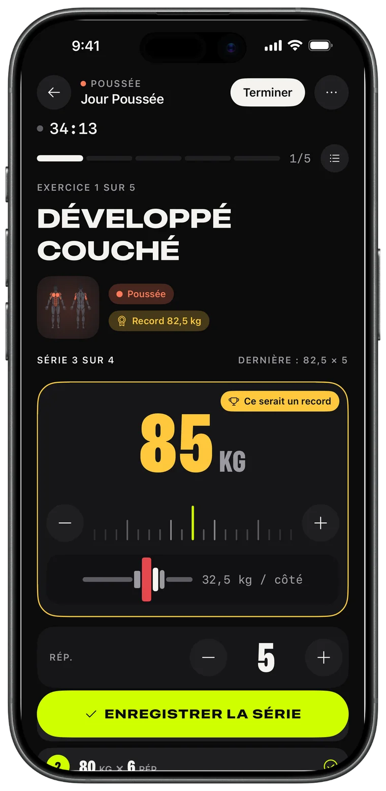
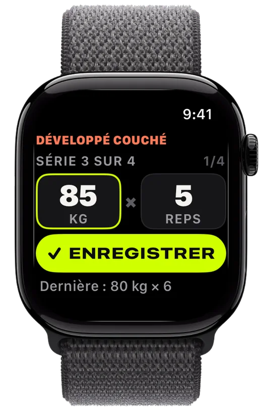
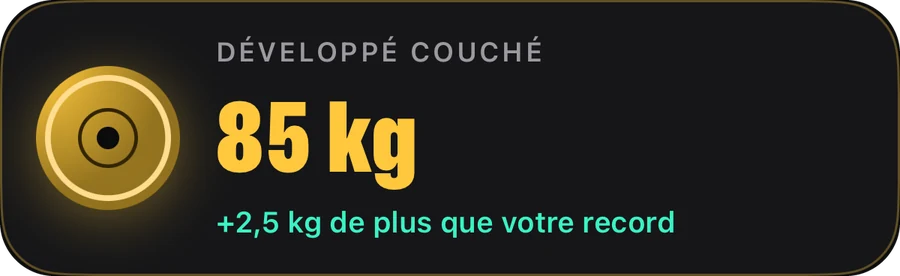
Saisie
Règle les disques, note la série, fais mieux que la dernière fois. Replex se souvient de ce que tu as soulevé et prépare la série suivante avant toi.
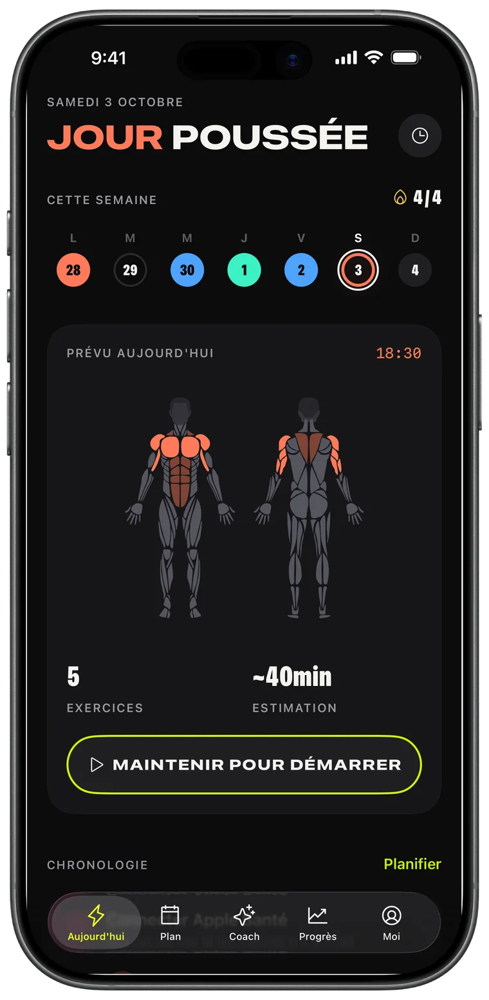
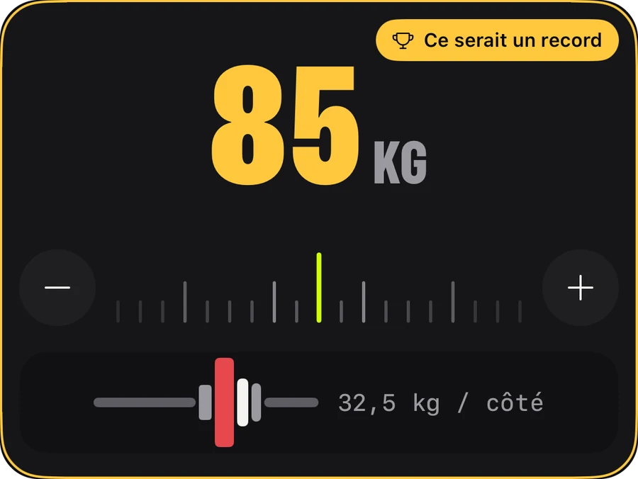
Apple Watch
Laisse ton téléphone dans ton sac. Tourne la couronne pour régler le poids et les répétitions, touche ENREGISTRER, et ton iPhone se synchronise en temps réel.
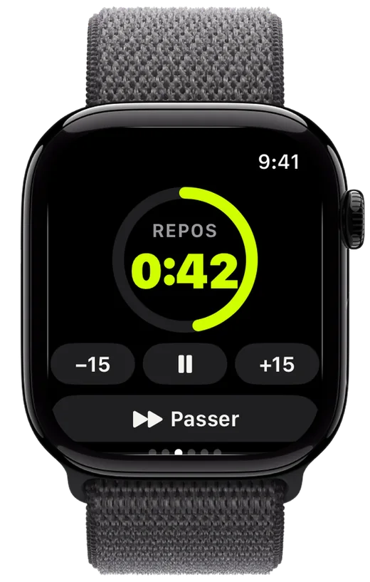
Progrès
Un volume qui grimpe semaine après semaine, chaque record battu et la courbe de chaque exercice : tu sais que tes efforts paient.
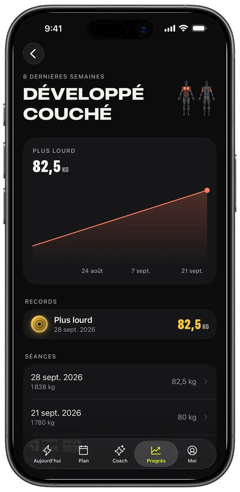
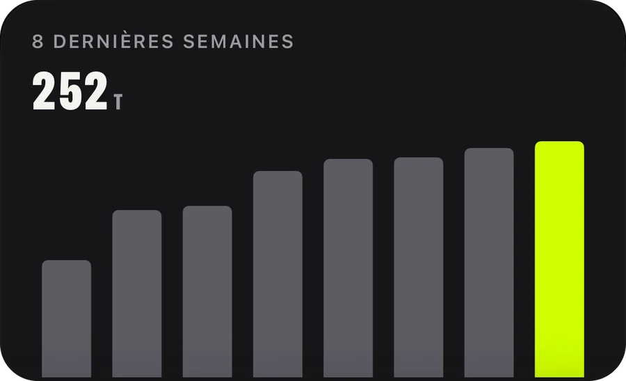
Coach IA · Pro
Demande ta semaine, elle arrive dans ton calendrier. Le Coach lit ton vrai entraînement — séances, records, sorties course — et planifie en fonction.
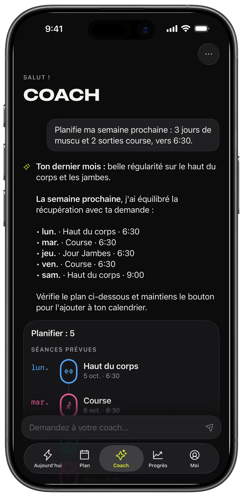
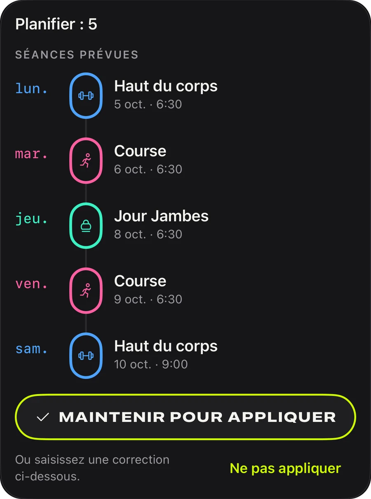
Plans
Poussée, traction, jambes, haut/bas du corps, full body : 44 plans prêts à démarrer aujourd'hui, ou crée le tien et mets-le en boucle.
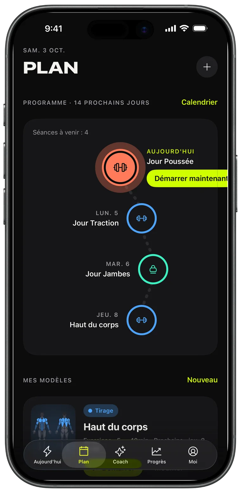
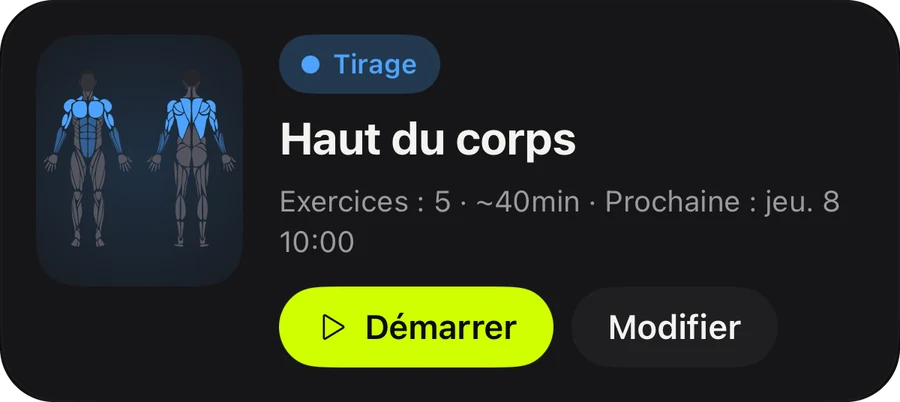
Partage
Chaque séance terminée devient une carte story avec ton volume, ta durée et tes records. Publie-la, ou garde-la comme preuve.
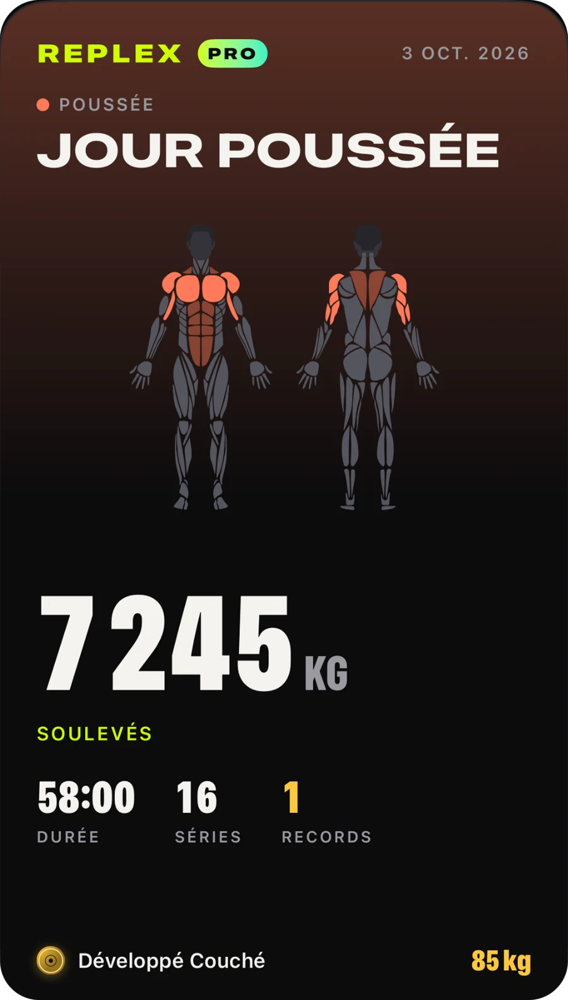
Le cardio de n'importe quelle app s'affiche avec le tracé, l'allure et les zones de fréquence cardiaque.
Ta série, ton repos et ta fréquence cardiaque sur l'écran verrouillé et dans la Dynamic Island.
Séances, modèles et plans sur tous tes appareils, rien qu'à toi.
Vois ce qu'une séance travaille avant de commencer et ce que tu as déjà sollicité cette semaine.
Kilos, livres ou stones ; exercices au poids du corps et chronométrés inclus.
Clair ou sombre, et trois accents : Volt, Bleu et Rose, avec les icônes d'app assorties.
Tout ce qu'il faut pour noter et progresser.
Pour ceux qui planifient à l'avance.
Pro est disponible dans l'app au mois, à l'année ou en achat unique à vie. Les abonnements peuvent être résiliés à tout moment depuis ton compte Apple.
Télécharge Replex et note ta première séance en moins d'une minute.
Non. Replex fonctionne entièrement sur iPhone. Avec une Apple Watch, tu peux enregistrer tes séries, lancer le minuteur de repos et suivre ta fréquence cardiaque depuis ton poignet.
Oui. Replex est gratuit : saisie des séances, minuteur de repos, 5 plans au poids du corps, records de tes séances récentes et 5 séances sur Apple Watch. Replex Pro — au mois, à l'année ou en achat unique à vie — ajoute le Coach IA, les 44 plans, tes propres modèles et leur programmation, l'historique complet et des séances illimitées sur la Watch.
Sur tes appareils et dans ton iCloud privé. Les séances peuvent aussi être enregistrées dans l'app Santé. Le Coach IA ne voit que ce dont il a besoin pour te répondre, et seulement quand tu le lui demandes.
Kilos, livres ou stones, et le calculateur de disques suit ton unité.
54, dont le français, l'anglais, l'espagnol, le portugais, l'allemand, le japonais, le coréen, le chinois, l'arabe et l'hébreu.